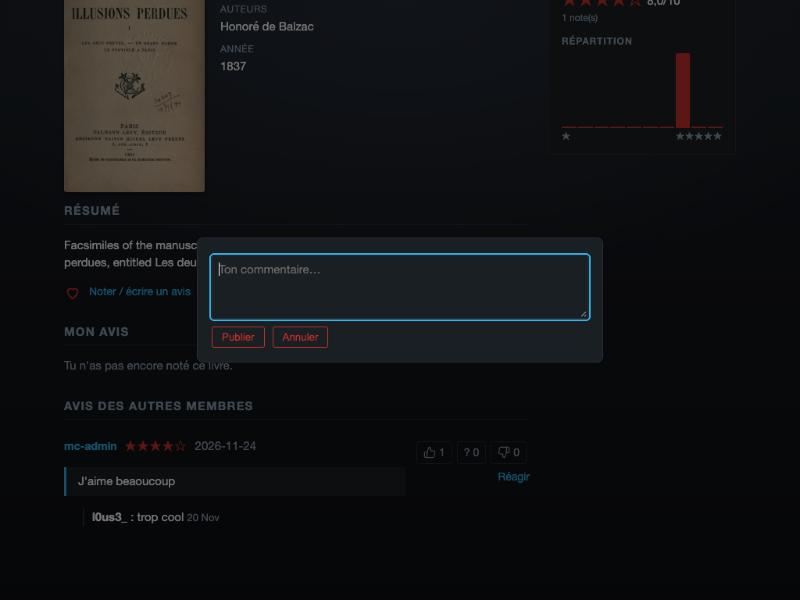

Ficha de un libro
Recorrido
Arriba a la izquierda, la portada; al lado, los metadatos (autores, año, ISBN, páginas, premios obtenidos). A la derecha, el recuadro «Nota media» con la nota sobre 10, el número de votantes y un histograma de la distribución (de 1 a 5 estrellas). Más abajo, el resumen y la fila de acciones: «Puntuar / escribir una reseña», añadir a favoritos (corazón), añadir a una lista (carpeta) y sugerir (triángulo). La sección «Mi reseña» está vacía si aún no has puntuado; si no, verás tu nota y tu texto. Por último, «Reseñas de otros miembros» muestra, para cada una, estrellas, fecha, extracto, tres reacciones (pulgar arriba / signo de interrogación / pulgar abajo) y un enlace «Reaccionar» para publicar un comentario bajo la reseña.
Cadenas de acción
Cada fila describe un disparador en la interfaz, el modal o formulario que abre, y el efecto producido.
| Disparador | Modal / Campos | Efecto |
|---|---|---|
| Enlace «Puntuar / escribir una reseña» (o clic en las estrellas) | Ventana con: «Añadir a favoritos» (corazón), Estado (por leer / leyendo / leído), Fecha de inicio, Fecha de fin, Nota (5 estrellas, medias estrellas posibles), Reseña (área de texto), casilla «Contiene spoilers». | Guarda una «lectura» vinculada a este libro: tu nota aparece al instante en «Mi reseña», entra en la media y tu reseña aparece en el flujo de reseñas de tus clubs. Si marcas «spoilers», tu reseña queda oculta por defecto para los demás, que deben hacer clic para verla. |
| Icono de corazón (bajo el resumen) | — | Añade o quita el libro de tu lista del sistema «Favoritos». Corazón lleno = favorito; corazón vacío = no favorito. |
| Icono de carpeta (bajo el resumen) | Ventana «Añadir a una lista» con tus listas existentes (nombre + número de libros) y un campo «Título» para crear una lista nueva. | Añade el libro a la lista elegida o crea una nueva. Confirmación en la ficha de la lista correspondiente. |
| Icono de compartir / triángulo (bajo el resumen) | Ventana «Sugerir este libro»: botones de opción con los miembros que sigues + área de texto «Mensaje (opcional)» (contador 0/280). | Envía una notificación al destinatario, que recibe una entrada en «Notifs» del tipo «X te sugiere <libro>: <tu mensaje>». Si no sigues a nadie, la ventana te pide primero seguir a un miembro. |
| Pulgar arriba / signo de interrogación / pulgar abajo bajo una reseña | — | Guarda tu reacción (positiva, mixta o negativa) a la reseña. Los contadores se actualizan; el autor de la reseña ve las reacciones. |
| Enlace «Reaccionar» bajo una reseña | Ventana con un área de texto «Tu comentario...» y botones «Publicar» / «Cancelar». | Publica un comentario anidado bajo la reseña. Los demás miembros del club lo ven y el autor de la reseña recibe una notificación. Los comentarios solo pueden eliminarlos su autor o un administrador. |
Ventanas


